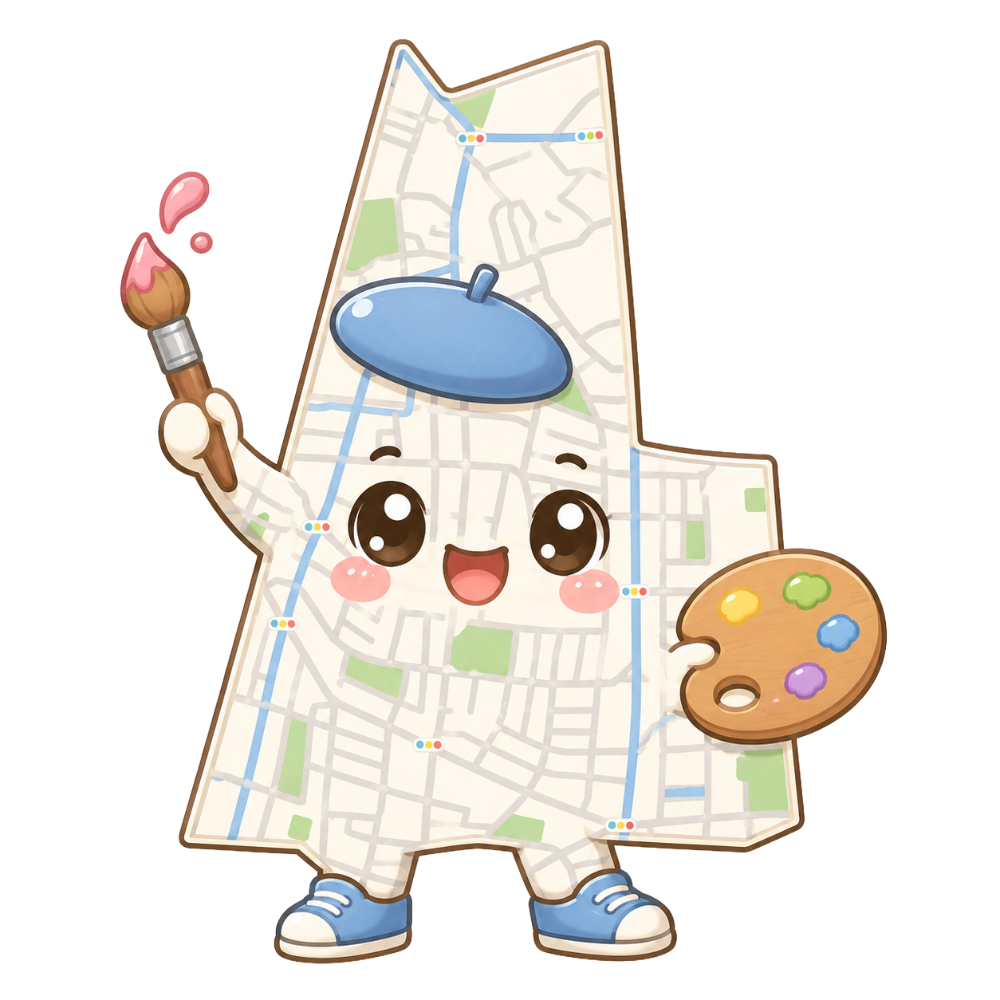

¥1,500/h
たけ太26・西竹ノ塚
接客飲食ホール力仕事
居酒屋バイト歴5年。元気な接客とスピードが自慢です。イベントの売り子もおまかせ！
¥1,500/時〜
「今日だけ人手が足りない」「イベントの売り子をお願いしたい」。そんなとき、竹マップに登録された地元スタッフを1時間単位でレンタル。得意なこと・報酬を見て、ぴったりの人を選べます。

得意なこと・報酬・人柄を見て、お願いしたいスタッフを選びます。
「この人をレンタル」から、希望日時とお仕事内容を送って調整。
竹マップが間に入って安心サポート。お仕事完了後にお支払い。
居酒屋バイト歴5年。元気な接客とスピードが自慢です。イベントの売り子もおまかせ！
保育士資格あり。お店のイベントでの託児や、写真・SNS用の撮影が得意です。
体力には自信あり！イベント設営・撤去、ポスティング、なんでもやります。
事務歴10年。繁忙期の経理・データ入力・レジ締めなど、デスクワークをお手伝い。
飲食キッチン経験豊富。仕込みから洗い場まで、厨房の即戦力になります。
アパレル販売出身。笑顔の接客とギフトラッピングが得意。物販イベントで活躍します。
空いた時間に、ご近所でちょっと働く。あなたの「得意」を登録して、竹ノ塚のお店から声がかかるのを待ちましょう。
登録後、竹マップ事務局による簡単な確認のうえ掲載されます。
まずはお気軽にご相談ください。最短で当日手配も。